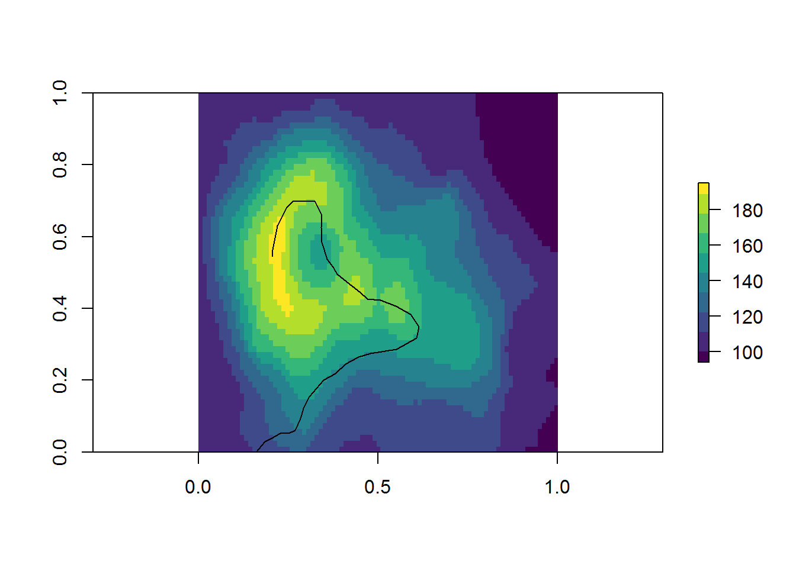
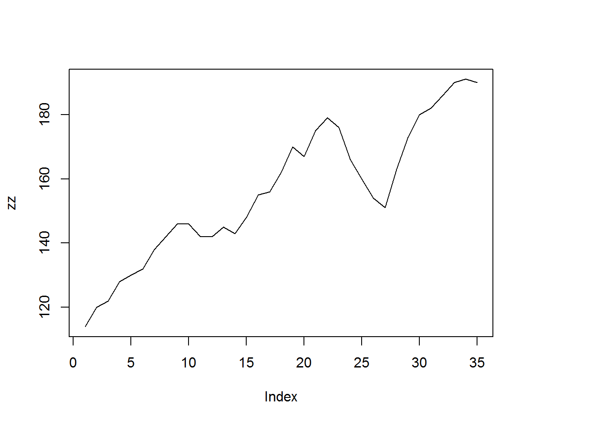
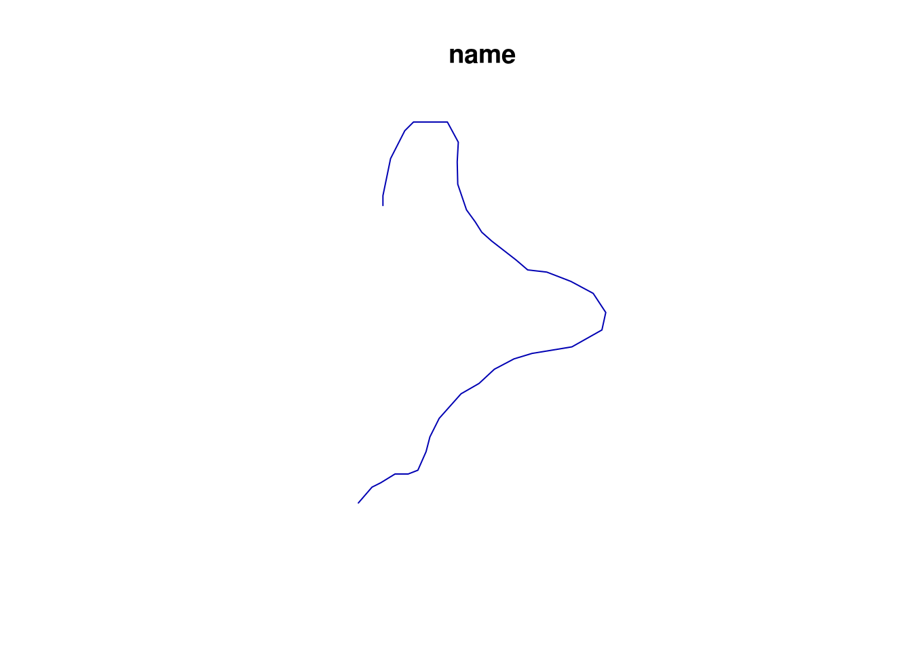

In simple features, we can put more information on the coordinates in the form of either ‘Z’ or ‘M’, or both.
This epic journey takes us to the top of a volcano.
library(raster)## Loading required package: spdata("volcano")
## prepared with dput(lapply(locator(), round, 3))
xy_traverse <- do.call(cbind, structure(list(x = c(0.161, 0.186, 0.202, 0.228, 0.252, 0.27,
0.285, 0.292, 0.309, 0.349, 0.382, 0.41, 0.446, 0.479, 0.552,
0.607, 0.614, 0.591, 0.55, 0.506, 0.471, 0.45, 0.405, 0.387,
0.375, 0.359, 0.343, 0.342, 0.344, 0.324, 0.262, 0.246, 0.22,
0.206, 0.206), y = c(0, 0.029, 0.037, 0.053, 0.053, 0.06, 0.094,
0.121, 0.155, 0.2, 0.219, 0.245, 0.264, 0.274, 0.286, 0.317,
0.349, 0.384, 0.406, 0.423, 0.427, 0.445, 0.48, 0.496, 0.515,
0.537, 0.584, 0.625, 0.661, 0.698, 0.698, 0.682, 0.631, 0.563,
0.545)), .Names = c("x", "y")))
rastergrid <- raster(t(volcano[,ncol(volcano):1 ]))
zz <- extract(rastergrid, xy_traverse)
plot(rastergrid, col = viridis::viridis(10))
lines(xy_traverse[, 1:2])
plot(zz, type = "l")
Having done all of this work, we write a nice compact report.
library(sf)## Linking to GEOS 3.5.1, GDAL 2.1.2, proj.4 4.9.3report <- st_sf(name = "epic traverse", st_sfc(st_linestring(cbind(xy_traverse, zz))))
plot(report)
print(report)## Simple feature collection with 1 feature and 1 field
## geometry type: LINESTRING
## dimension: XYZ
## bbox: xmin: 0.161 ymin: 0 xmax: 0.614 ymax: 0.698
## epsg (SRID): NA
## proj4string: NA
## name st_sfc.st_linestring.cbind.xy_traverse..zz...
## 1 epic traverse LINESTRINGZ(0.161 0 114, 0....TBD
library(spbabel)
map_table(report, v_atts = c("x_", "y_", "z_"))## $o
## # A tibble: 1 x 3
## name st_sfc.st_linestring.cbind.xy_traverse..zz... object_
## * <fctr> <simple_feature> <chr>
## 1 epic traverse <LINESTRINGZ(...> Ou5qXn2OTj
##
## $b
## # A tibble: 1 x 1
## object_
## <chr>
## 1 Ou5qXn2OTj
##
## $bXv
## # A tibble: 35 x 2
## order_ vertex_
## <int> <chr>
## 1 1 X5WC3Bs5Ba
## 2 2 ouPPTSL1Tr
## 3 3 p0ZS6WnNnI
## 4 4 A9siVs8bW0
## 5 5 98MRif8p9x
## 6 6 TqItC6VYpm
## 7 7 oHyZlAAP3K
## 8 8 33PHKhap8y
## 9 9 d3jI9lC2XK
## 10 10 DcbrGD8b2e
## # ... with 25 more rows
##
## $v
## # A tibble: 35 x 4
## x_ y_ z_ vertex_
## <dbl> <dbl> <dbl> <chr>
## 1 0.161 0.000 114 X5WC3Bs5Ba
## 2 0.186 0.029 120 ouPPTSL1Tr
## 3 0.202 0.037 122 p0ZS6WnNnI
## 4 0.228 0.053 128 A9siVs8bW0
## 5 0.252 0.053 130 98MRif8p9x
## 6 0.270 0.060 132 TqItC6VYpm
## 7 0.285 0.094 138 oHyZlAAP3K
## 8 0.292 0.121 142 33PHKhap8y
## 9 0.309 0.155 146 d3jI9lC2XK
## 10 0.349 0.200 146 DcbrGD8b2e
## # ... with 25 more rows
##
## attr(,"class")
## [1] "map_table" "list"